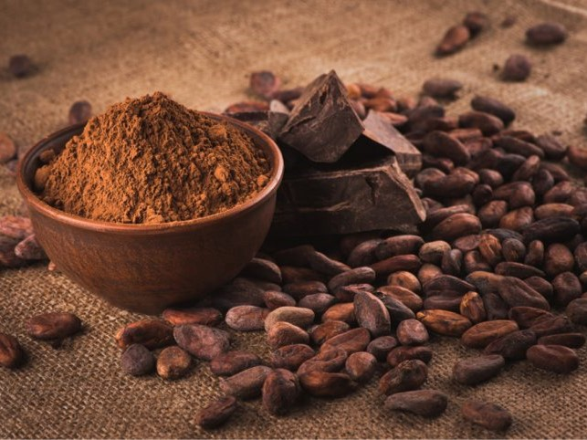

|

|
追古溯今
- 過去曾認為，巧克力的起源地來自於中美洲，但近幾年的實驗證實其實巧克力真正的起源地來自於南美洲，再透過民族間的以物易物、買賣交易而逐漸往中美洲傳遞。
- 中美洲的馬雅文明將巧克力視為神聖的飲品、神仙飲料，可可豆筴象徵著生育與生命，常被製成帶有苦味、能振奮精神的泡沫飲料，與我們所認為的巧克力有些衝突。馬雅人相信可可種子是羽蛇神賜予他們的禮物，有如此重要的價值，以至於它曾被用作一種貨幣形式。
- 可可樹種植於墨西哥，再由於大航海時代時來墨西哥的探險家帶回歐洲，傳到了歐洲後，歐洲人向其中加入了糖，這樣，巧克力飲料的味道不再是苦澀的，而變成人們喜歡的甜味，因此巧克力開始風靡於全歐洲。
- 經由不同國度人們的創意發想，巧克力從原本的飲品，開始演變為固體；味道從苦澀，開始演變為甜蜜，從而形成現在大眾所認知的「巧克力」。
|

|
成分及加工
- 巧克力由可可豆加工而成，主要成分是可可脂與可可塊:可可塊中含有可可鹼，其食用有助提升精神，增強興奮等功效；可可脂主要影響巧克力的熔點，有6種不同的形式比例。
- 而全世界大約三分之二的可可是由西非生產的，其中有43%是來自象牙海岸。可可豆經過發酵、乾燥、烘焙、研磨，製成可可漿。可可漿可製成可可脂與可可粉，或進一步加工製成巧克力。
- 巧克力含有鐵、鈣、鎂、鉀、維生素A、維生素C 和可可鹼，由於多添加糖分，因此具有高能量值。
|
|
種類
黑巧克力Dark chocolate
- 可可含量介於70%到99%之間，或乳質含量少於12％的巧克力
- 價格最高的巧克力
- 純正的黑巧克力是不含糖的
白巧克力White chocolate
- 含可可脂，不含可可粉
- 組成與牛奶巧克力大致相同，但甜度相對較高
牛奶巧克力Milk chocolate
- 至少含10％的可可漿，以及12％的乳質
- 市面上最常見的巧克力
紅寶石巧克力Ruby chocolate
- 紅寶石可可豆（產自巴西、厄瓜多與象牙海岸的可可豆提煉而成）
- 有淡淡的莓果香氣、有微微酸甜的風味
生巧克力Nama chocolate
- 取自日文漢字「生」直接使用，意指新鮮的意思
- 使用牛奶、鮮奶油、奶油等製成
- 質地偏軟、口感滑順，但要注意的是其保存期限較短
松露巧克力Truffle chocolate
- 形狀及價格與松露相近，但其實不含有任何松露成分
果仁巧克力nut center
- 為包有果仁的巧克力
酒心巧克力Beer chocolate
- 為加入了烈酒酒漿的巧克力
|
|
|
注意事項
- 巧克力中的可可鹼對動物的神經系統是有影響的，因為牠們體內無法進行有效的化學代謝來代謝可可鹼，舉例來說：貓、狗。
由於對其新陳代謝速度要慢得多，因此巧克力對牠們來說可以說是有毒的，所以要特別注意請勿讓動物不小心誤食了巧克力喔！
|